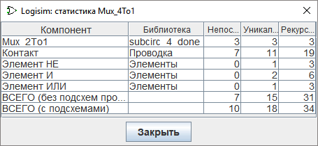

Меню Проект
- Добавить схему…
-
Добавляет новую схему в текущий проект. Logisim-evolution предложит вам ввести имя новой схемы, которое не должно совпадать с именами уже существующих схем в проекте.
- Добавить сущность VHDL…
-
Создаёт и добавляет в проект новый компонент, поведение которого описывается кодом на языке VHDL.
- Импортировать сущность VHDL…
-
Импортирует существующее VHDL-описание из внешнего файла в качестве компонента текущего проекта.
- Загрузить библиотеку
-
Подключает внешнюю библиотеку компонентов к проекту. Вы можете загружать три типа библиотек, подробное описание которых приведено в разделе Навигатор.
- Выгрузить библиотеки…
-
Отключает ранее загруженные библиотеки от проекта. Logisim-evolution не позволит выгрузить библиотеки, компоненты из которых задействованы на схемах проекта, вынесены на панель инструментов или назначены кнопкам мыши.
- Переместить схему вверх
-
Перемещает отображаемую в данный момент схему на одну позицию вверх в списке схем проекта в навигаторе.
- Переместить схему вниз
-
Перемещает отображаемую в данный момент схему на одну позицию вниз в списке схем проекта в навигаторе.
- Сделать главной схемой
-
Назначает текущую схему главной схемой проекта. Этот пункт будет заблокирован, если схема уже является главной. Главная схема автоматически открывается первой при загрузке файла проекта.
- Удалить схему
-
Удаляет отображаемую в данный момент схему из проекта. Logisim-evolution не позволит вам удалить схему, если она используется в качестве подсхемы в других частях проекта, а также если это единственная схема в проекте.
- Восстановить внешний вид по умолчанию
-
Если вы изменили внешний вид схемы, этот пункт сбрасывает его до стандартного прямоугольного символа. Он активен только в режиме редактирования внешнего вида схемы. Параметры автоматического внешнего вида можно изменить с помощью свойства библиотеки «Использовать новую компоновку» (Use new box layout).
- Редактировать схему
-
Переключает рабочую область в режим редактирования структуры схемы (размещения компонентов и проводников), определяющей логику её работы. Этот пункт меню обычно заблокирован, так как этот режим активен по умолчанию.
- Редактировать внешний вид схемы
-
Переключает рабочую область в режим редактирования графического обозначения схемы (символа подсхемы), которое будет показываться при её установке в другие схемы. Подробнее см. раздел Редактор внешнего вида.
- Анализировать схему
-
Примечание: по умолчанию эта функция отключена в текущей версии Logisim-evolution. Её можно активировать через параметры запуска командной строки.
Строит таблицу истинности и логические выражения для текущей схемы, отображая их в окне комбинационного анализа. Анализ применим только к комбинационным схемам без обратных связей. Полное руководство приведено в разделе Комбинационный анализ.
- Получить статистику схемы
-
Открывает диалоговое окно со статистикой по используемым в схеме компонентам. Таблица содержит пять столбцов:

- Компонент: название компонента.
- Библиотека: библиотека, к которой принадлежит компонент.
- Простых: количество непосредственных включений компонента в данную схему.
- Уникальных: общее число включений во всей иерархии схемы, при этом каждая уникальная подсхема учитывается ровно один раз.
- Рекурсивно: общее число включений во всей иерархии схемы, где подсхемы учитываются рекурсивно столько раз, сколько они фактически вызываются.
Разницу между значениями «Уникальных» и «Рекурсивно» проще всего проиллюстрировать на примере мультиплексора 4:1, построенного из трёх мультиплексоров 2:1 (как описано в разделе Использование подсхем). Каждый мультиплексор 2:1 содержит два логических элемента «И» (а в самой схеме 4:1 они напрямую не используются). Таким образом, значение «Уникальных» для элементов «И» равно 2, но поскольку для схемы 4:1 требуются три копии схемы 2:1, значение «Рекурсивно» составит 6.
Компоненты из встроенных или загруженных библиотек Logisim-evolution рассматриваются как «чёрные ящики»: их внутренняя структура не анализируется и не увеличивает показатели уникальных и рекурсивных элементов.
- Параметры…
-
Открывает окно настройки параметров текущего проекта.
Далее: Меню Моделирование.